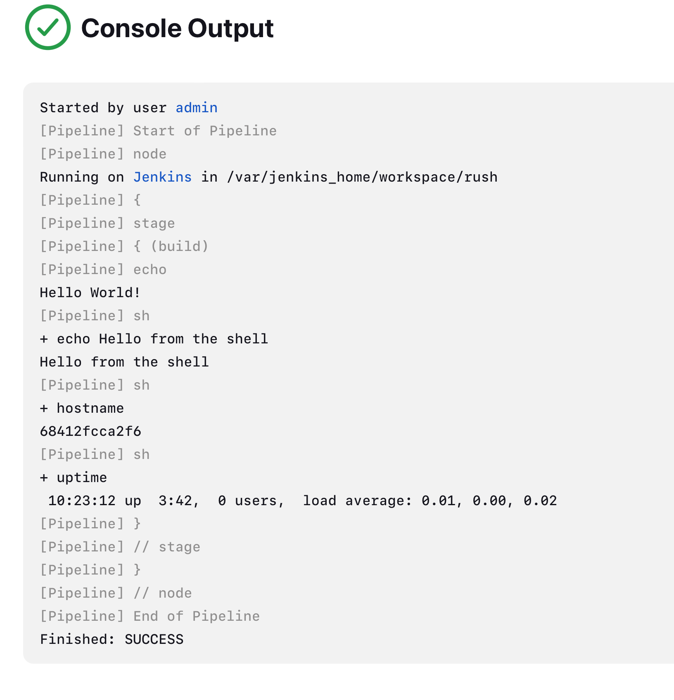

Lab 2 · Your First Pipeline
3. Running Shell Commands
From a Jenkins pipeline you can run any external program. When the pipeline runs on Linux or macOS, use the sh step: it runs a command in the Unix shell. The command must exist on the machine where the pipeline runs.
In this example:
echois Jenkins' own step, which prints a message.sh "echo …"calls theechocommand of the Unix shell.sh "hostname"prints the name of the machine.sh "uptime"shows how long the machine has been running.
Try it
Create a new Pipeline job called shell-commands (New Item → Pipeline → OK), paste this script, save, and click Build Now:
A pipeline that runs shell commands
pipeline {
agent any
stages {
stage('build') {
steps {
echo "Hello World!"
sh "echo Hello from the shell"
sh "hostname"
sh "uptime"
}
}
}
}Open Console Output. Your log should look like this:

- Lines starting with
+show each shell command Jenkins ran; the line below is its result. hostnameprints a strange name such as68412fcca2f6. That is because Jenkins runs inside a Docker container: this is the container ID. Compare it with the CONTAINER ID column ofdocker psin your terminal.
Compare the container ID with the hostname printed by Jenkins
docker psSame pipeline for a Jenkins installed directly on Windows
pipeline {
agent any
stages {
stage('build') {
steps {
echo "Hello World!"
bat "echo Hello from the Windows shell"
bat "hostname"
bat "systeminfo"
}
}
}
}systeminfo takes a few seconds and prints a long report. Look for the line System Boot Time: it tells you since when the machine is running, like uptime on Linux.